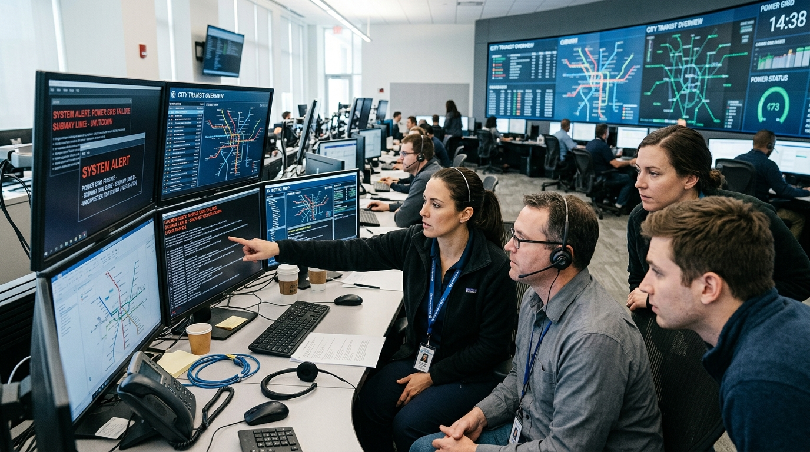

Imagine waking up tomorrow. Your phone still turns on. Your bank account still exists. Chennai Metro is still running. Hospitals are still open. Factories are still operating. Nothing appears to have changed.
But there is one difference: Nobody can develop or maintain software anymore.
No new applications. No updates. No security patches. No new databases. No new AI models. No software engineers. No developers. No one can repair, patch, or improve the digital systems that modern society depends on.
Would the world immediately collapse? Probably not. And that is what makes this scenario interesting. The real danger would not happen in one day. It would happen gradually.
The Difference Between "Software Disappears" and "Software Development Stops"
Existing software does not automatically stop working just because developers disappear. A banking application might continue working. A metro system might continue operating. A hospital database might continue storing information.
Every software system has a lifecycle:
- Hardware components fail and require updated drivers.
- Security vulnerabilities are continuously discovered.
- Operating systems change underneath applications.
- Dependencies become obsolete and break integrations.
- Data volumes grow beyond original capacities.
- New devices require integration.
- Businesses need new functional rules.
It is: “Everything becomes progressively harder to maintain.”
Interactive Simulator: Progressive System Degradation
Click each stage to see how unmaintained systems decay over time.
Day 1 — Nothing Seems Wrong (The Clock Has Started)
Phones turn on, UPI processes payments, and Chennai Metro trains run on schedule. Existing compiled binaries continue executing. People think: “Nothing happened.” But the invisible clock has started. Every operating system, database, and microservice is now permanently frozen without future updates.
The Timeline of Accumulating Failure
Day 1 — Nothing Seems Wrong
During the first few hours, most people do not notice anything. Existing systems continue operating. Phones still work. Websites load. ATMs function. People think: “Nothing happened.” But the clock has started.
Week 1 — Development Stops
Companies immediately freeze software projects. No new features, no major upgrades, no new integrations. But existing systems continue to generate unhandled errors and log warnings.
Month 1 — The Backlog Begins
Software vulnerabilities are discovered that cannot be patched. Businesses accumulate security issues, bugs, OS compatibility problems, and outdated dependencies. The question changes from: “How do we build the next version?” to: “How long can we keep the current version alive?”
Six Months to 1 Year — Legacy Systems Take Over
Technology normally improves because older systems are replaced. Without software development, replacement becomes impossible. Organizations become dependent on unmodifiable legacy systems, and cybersecurity risks escalate.
One to Five Years — The Problem Becomes Systemic
Software is not limited to tech firms. It supports banking, healthcare, transportation, government, manufacturing, logistics, and utilities. When software maintenance stops, the consequences spread through every layer of society.
Chennai Without Software: 10 Critical Sectors
Chennai is an especially important city to examine because technology is connected to many parts of its economy:

1. Banking & Digital Payments
India operates the world's largest real-time payment network. UPI processed approximately 24.5 billion transactions in August 2026 alone, with a transaction value of roughly ₹29.8 trillion. Without ongoing maintenance, unpatched zero-days, database deadlocks, and fraud-detection degradation turn minor issues into systemic risks.
2. Chennai Metro
Trains don't need software development every morning to move. But automated fare collection, signaling, scheduling, and database compatibility require continuous maintenance over years. Over time, stations must revert to manual paper tokens.
3. Government Services
Tamil Nadu's administration relies on digital portals: e-Office, e-Sevai, TNGIS, and the State Family Database. When software development stops, citizen services experience database corruption and must revert to manual physical paperwork.
4. Digital Identity (Aadhaar Infrastructure)
National Aadhaar authentication operates at enormous scale. Without developers to manage server clusters, update cryptographic keys, and patch security bugs, long-term reliability degrades.
5. Hospitals
Doctors, nurses, and medicines do not disappear. But when hospital electronic medical records (EMR), lab analyzers, and imaging systems freeze, hospitals face slower communication, immense paperwork, and reduced operational efficiency.
6. Manufacturing & Logistics
Modern factories in Sriperumbudur and Oragadam depend on industrial control systems, sensors, and robotics. Without engineers to integrate new lines or fix PLC drops, manufacturing output steadily declines. At Chennai Port and Kamarajar Port Ennore, container logistics gridlock without customs EDI systems.
7. Telecommunications & Education
Cell towers and fiber-optic backbones depend on software for routing, billing, and traffic optimization. Networks become congested. Online education platforms degrade, forcing schools to return entirely to chalkboards.
8. Jobs & “The OMR Effect”
Consider Chennai's technology corridors: OMR, Sholinganallur, Perungudi, Thoraipakkam, Siruseri, Taramani, and Porur. Technology offices do not exist in isolation. They create demand around them for homes, PG hostels, restaurants, supermarkets, call taxis, gyms, and schools.
Industry estimates show that one technology job supports 3 to 4 livelihoods in the surrounding service sector. If technology employment freezes, the impact affects the entire urban economy.
Five Years Later: Outdated Foundations
The world has not returned to the Stone Age. It has become something more frustrating:
Manual workarounds have returned. Innovation has slowed. Security risks have multiplied.
The Big Idea & The Real Lesson
People often think of programming as simply a job. But software supports banking, healthcare, transit, manufacturing, education, and utilities. Removing the ability to develop software removes society's ability to continuously improve its foundation.
We should not build a society that depends completely on one technology or fragile monoculture. Technology must be resilient. Infrastructure needs redundancy. People need transferable skills. And society needs the ability to adapt when technology changes.
The biggest danger is not that technology changes. The biggest danger is becoming unable to change with it.